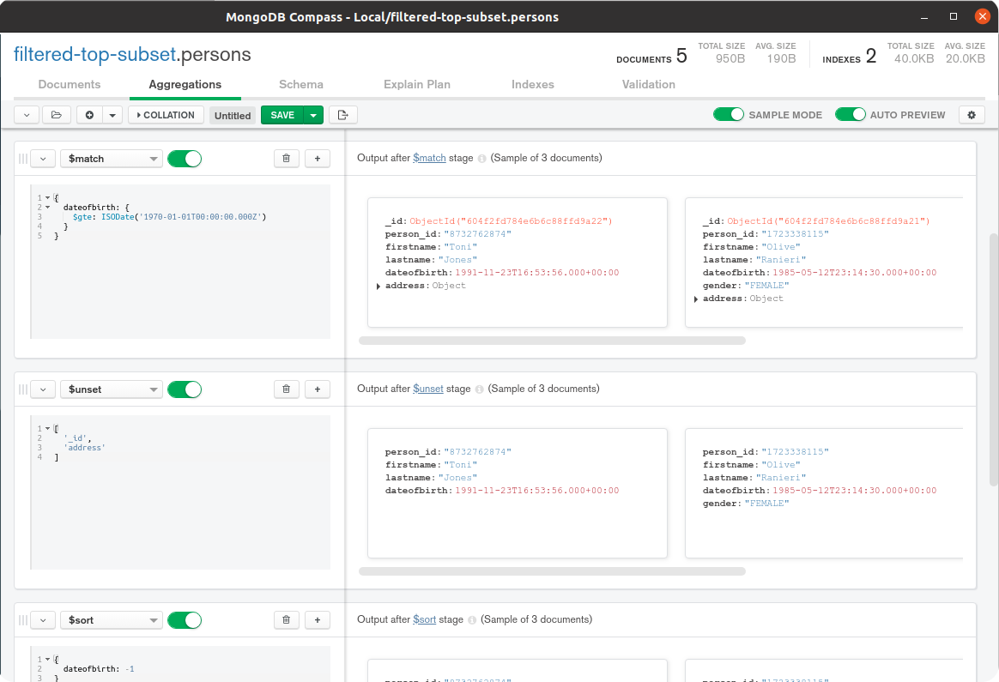
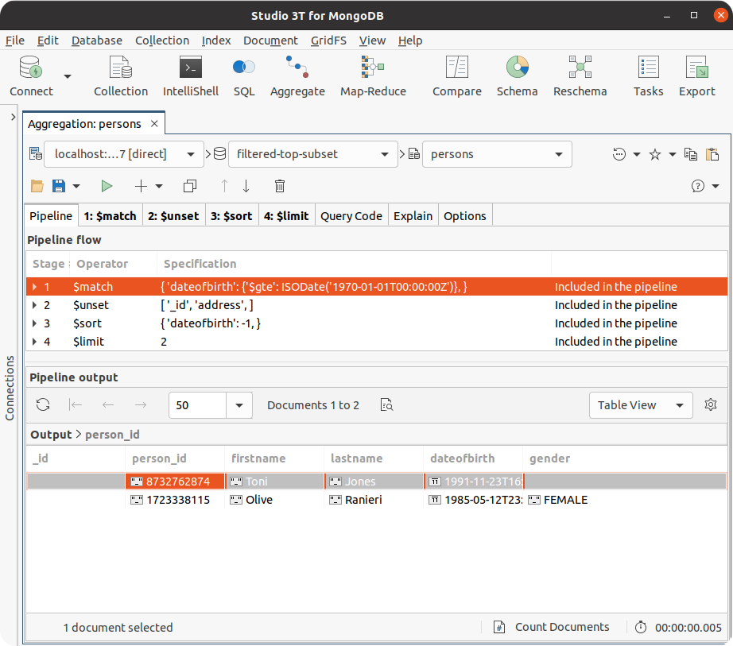

Getting Started
For developing aggregation pipelines effectively, and also to try the examples in the second half of this book, you need the following two elements:
- A MongoDB database, version 4.2 or greater, running somewhere which is network accessible from your workstation
- A MongoDB client tool running on your workstation with which to submit aggregation execution requests and to view the results
Note that each example aggregation pipeline shown in the second major part of this book is marked with the minimum version of MongoDB that you must use to execute the provided pipeline. Some example pipelines use aggregation features that MongoDB introduced in versions greater than 4.2. Where this is the case, the exact version number required is called out. For MongoDB versions 4.0 and earlier, some examples may work unchanged. Some examples may work with minor alterations, and some may not work at all due to fundamental dependencies on features added in MongoDB versions after 4.0.
Database
The database deployment for you to connect to can be a single server, a replica set or a sharded cluster. You can run this deployment locally on your workstation or remotely on-prem or in the cloud. It doesn't matter which. You need to know the MongoDB URL for connecting to the database and, if authentication is enabled, the credentials required for full read and write access.
If you don't already have access to a MongoDB database, the two most accessible options for running a database for free are:
- Provision a Free Tier MongoDB Cluster in MongoDB Atlas, which is MongoDB Inc.'s cloud-based Database-as-a-Service (once deployed, in the Atlas Console, there is a button you can click to copy the URL of the cluster)
- Install and run a MongoDB single server locally on your workstation
Client Tool
There are many options for the client tool, four of which are:
- Modern Shell. Install the modern version of MongoDB's command-line tool, the MongoDB Shell:
mongosh - Legacy Shell. Install the legacy version of MongoDB's command-line tool, the Mongo Shell:
mongo(you will often find this binary bundled with a MongoDB database installation or you can download it from the Atlas console) - Compass. Install the official MongoDB Inc. provided graphical user interface (GUI) tool, MongoDB Compass
- Studio 3T. Install the 3rd party 3T Software Labs provided graphical user interface (GUI) tool, Studio 3T
The book's examples present code in such a way to make it easy to copy and paste into the MongoDB's Shell (mongosh or mongo) to execute. All subsequent instructions in this book assume you are using the Shell. However, you will find it straightforward to use one of the mentioned GUI tools instead to consume the code examples. Of the two Shell versions, is it is easier to use and view results with the modern Shell.
MongoDB Shell With Atlas Database
Here is an example of how you can start the modern Shell to connect to an Atlas Free Tier MongoDB Cluster (change the text mongosh to mongo if you are using the legacy Shell):
mongosh "mongodb+srv://mycluster.a123b.mongodb.net/test" --username myuser
Note before running the command above, ensure
- You have added your workstation's IP address to the Atlas Access List
- You have created a database user for the deployed Atlas cluster, with rights to create, read and write to any database
- You have changed the dummy URL and username text, shown in the above example command, to match your real cluster's details (these details are accessible via the cluster's
Connectbutton in the Atlas Console)
MongoDB Shell With Local Database
Here is an example of how you can start the modern Shell to connect to a MongoDB single server database if you've installed one locally on your workstation (change the text mongosh to mongo if you are using the legacy Shell):
mongosh "mongodb://localhost:27017"
MongoDB Compass GUI
MongoDB Compass provides an Aggregation Pipeline Builder tool to assist users in prototyping and debugging aggregation pipelines and exporting them to different programming languages. Below is a screenshot of the aggregation tool in Compass:

Studio 3T GUI
Studio 3T provides an Aggregation Editor tool to help users prototype and debug aggregation pipelines and translate them to different programming languages. Below is a screenshot of the aggregation tool in Studio 3T:
